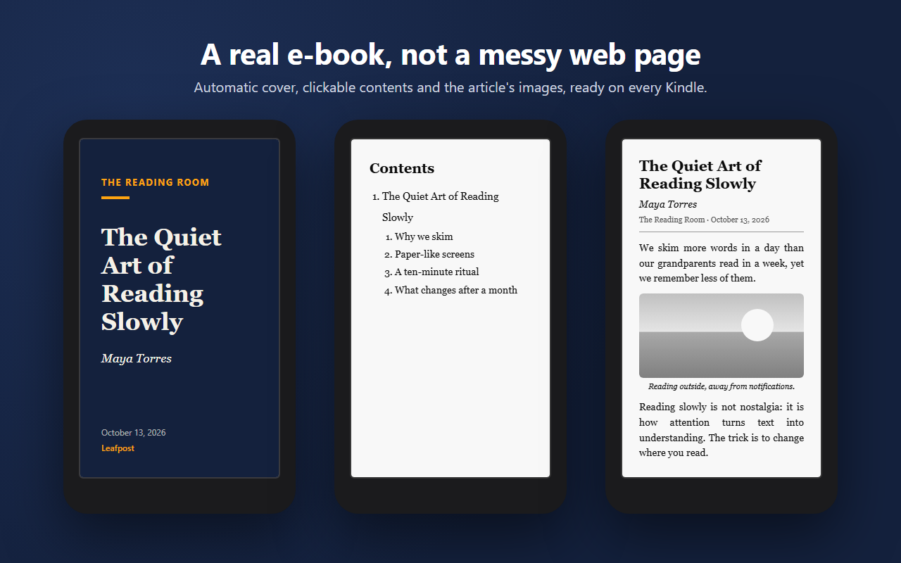

Cómo enviar artículos de internet a tu Kindle: 5 formas comparadas
Respuesta rápida: lo más rápido es una extensión que convierte la página en libro electrónico y la envía con el servicio Send to Kindle de Amazon, como Leafpost: abres el artículo, pulsas y listo. Sin extensión, puedes guardar la página como PDF y subirla a amazon.es/sendtokindle, o mandarla por correo a tu dirección @kindle.com.
Leer artículos largos en el Kindle cansa menos la vista, no tiene notificaciones y, sobre todo, los terminas. Lo difícil es que lleguen con buen formato, con imágenes y sin anuncios. Estas son las cinco formas, de mejor a peor para el día a día.
1. Extensión de un clic (la mejor)
- Instala Leafpost en Chrome, Edge o Brave, con la sesión de Amazon iniciada en ese navegador.
- Abre el artículo y pulsa el icono de Leafpost. Puedes cambiar el título y el autor.
- Pulsa Enviar al Kindle. En un minuto lo tienes en Documentos, con portada propia e índice.

También puedes enviar solo el texto seleccionado, hacer clic derecho en un enlace para enviar el artículo sin abrirlo, o usar el atajo Alt+Mayús+K.
2. Guardar como PDF y subirlo
- Abre el artículo y pulsa Ctrl+P (Cmd+P en Mac) → Guardar como PDF.
- Súbelo en amazon.es/sendtokindle y pulsa Enviar.
Problema: el PDF mantiene el diseño de la web, así que la letra queda pequeña y arrastra menús y anuncios.
3. Por correo
Guarda el artículo como PDF o Word y envíalo como adjunto a tu dirección @kindle.com desde un correo autorizado. Te explicamos cómo en el correo de Kindle. Es lo que usan por dentro muchos servicios de «enviar a Kindle», y por eso te piden autorizar su dirección.
4. Apps de «leer más tarde»
Desde que Pocket cerró en 2025, mucha gente usa Instapaper, Readwise Reader o similares. Algunas envían lo guardado al Kindle, normalmente como función de pago. Leafpost también lo hace con su lista de lectura: guardas artículos durante el día y te llegan juntos al Kindle como un solo libro, cuando quieras o cada mañana (funciones Pro, gratis durante el acceso anticipado).
5. Copiar y pegar en un documento
Copia el texto en Word o Google Docs, exporta a DOCX y envíalo. Siempre funciona, pero pierdes las imágenes y los enlaces. Es el último recurso.
Substack, newsletters y webs de pago
- Substack: abre el post en la web (desde la propia newsletter o el enlace del correo) y envíalo con la extensión.
- Periódicos con suscripción: Leafpost crea el libro en tu navegador, así que envía lo que tú ves. Inicia sesión en tu suscripción antes. Los servicios que descargan el enlace desde sus servidores no pueden saltar el muro de pago.
Comparativa
| Método | Rapidez | Legible en Kindle | Imágenes |
|---|---|---|---|
| Extensión (Leafpost) | Un clic | Sí, texto ajustable | Sí |
| PDF + web de Amazon | 4–5 pasos | Letra pequeña | Sí |
| Correo | 3–4 pasos | Depende del archivo | Depende |
| App de leer más tarde | Automático | Normalmente | Normalmente |
| Copiar en un documento | Lento | Sí | No |
Preguntas frecuentes
¿Dónde aparecen los artículos?
En Biblioteca → Documentos, en todos tus Kindle y apps (no en Kindle para Web).
¿Es gratis?
Sí: el servicio Send to Kindle es gratuito por wifi, y enviar artículos con Leafpost también.